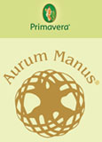
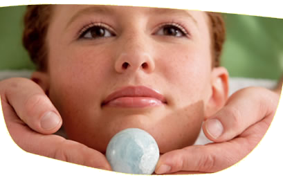
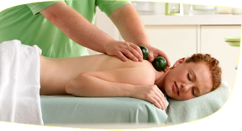
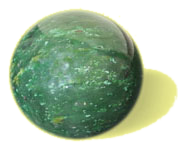
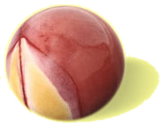
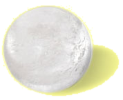
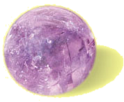
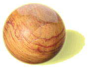
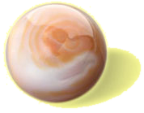

Edelstein-Massage
AURUM MANUS® die edelste Form der Massagekunst
Aurum Manus - Goldhand! Diese Massage ist ein fließender Tanz warmer Hände im innigen Kontakt zum Körper des Massierten. In diesem Tanz fließen Edelsteinkugeln ein und aus wie das Ein- und Auftauchen aus einem fließendem Strom. Dieser Fluß erreicht und belebt jeden Winkel unseres Seins.
Die von Ricky Welch entwickelte Massage vereint die Erfahrungen aus den unterschiedlichsten Massagetraditionen mit einer neuen Kombination aus warmen Ölmassagen mit Edelsteinkugeln. Verbunden mit der Stimulierung bestimmter Akupunkturpunkte und Meridiane, erfährt der Massierte dabei eine tiefe Entspannung von Körper, Seele und Geist.
Die Aurum Manus Massage ist eine ganzheitliche Massageform, die eine wohltuende Entspannung und Regeneration des Körpers bewirkt. Vieles, was durch Verspannungen auf körperlicher und seelischer Ebene entsteht, kann gelöst und ausgeleitet werden.
 90,- EUR
90,- EURGanzkörpermassage - 120 min
120,- EURRücken - 40 min
40,- EURGesicht-Schulter-Nacken - 20 min
24,- EURSchwangerschaftsmassage - 50 min
50,- EURSportmassage (Rücken/Beine) - 60 min
60,- EURinkl. ca. 30 min Vorbereitungs- u. Nachruhezeit
Verschenken Sie einen Aurum Manus!
Hier der Gutschein als PDF-Datei zum Herunterladen und AusdruckenDie Geschichte von AURUM MANUS®
Die Geschichte von Aurum Manus® ist auch die Geschichte von Ricky Welch, einem begnadeten Masseur, dem ein Lateinlehrer nach einer Massage goldene Hände "Aurum Manus" attestierte. Jahrelang begleitete Ricky Welch berühmte Band wir die Scorpions, Roxette, U2 und erlernte auf den Reisen rund um die Welt Massagen aus den unterschiedlichsten Kulturen und Traditionen.
1968 geboren in Yakima/Washington, USA, betreut Ricky welch nach seiner Ausbildung zum Masseur und med. Bademeister in Heidelberg von 1988-1995 verschiedene Sportmannschaften und Hochleistungssportler. Bis 2005 begleitete er Musiker und Künstler im In- und Ausland auf ihren Tourneen, u.a. die Scorpions. 1999 entwickelte Ricky Welch die Aurum Manus® Massage.
Aurums® - Ganzheitliche Massage mit Edelsteinen und Essenzen
Die Gründe für die besondere Wirksamkeit der Aurum Manus® Massage liegen in der bisher einzigartigen Kombination der einzelnen Behandlungselemente.
Zum Einsatz kommen bei der Aurum Manus® Massage besondere Rezepte der Aromatherapie, kombiniert mit klassischen Massagegriffen mit erwärmtem Öl (darüber Wärmetherapie und Entgiftung) sowie Meridianbehandlung (auch Akupunkturpunkte) und Chakrenbehandlung mittels erwärmter und kalter Edelsteinkugeln.
Verwendet werden ausgewählte Edelsteinkugeln höchster Güte (Therapiesteine) sowie hochwertige Aurum Manus® Massageöle und Pflegeprodukte in biologischer Qualität.
Aurum Manus® - wirksam und wohltuend
Regeneration - Tiefenentspannung - Stressbewältigung und das "wieder in Fluss kommen" für mehr Lebensfreude und Lebensenergie sind die Ziele der Aurum Manus® Massage.
Jade Nephrit (der wichtigste Therapiestein)
Der kostbaren Jade werden seit Jahrtausenden besondere Wirk- und Heilkräfte zugeschrieben, die ihrem Träger Glück und Gesundheit verleihen. Jade Nephrit gilt als Schutzstein für inneren Frieden und ausgeglichene Lebensenergie und dient zur Anregung der Regeneration, Entgiftung und auch Stärkung der Nierenfunktion. Herkunft: Kanada.
Mookait
Mookait ist ein Stein, der "die Mitte stärkt". Er hilft, sich innerlich zu sammeln und zu zentrieren und fördert innere Ruhe und Stabilität. Gleichzeitig aktiviert er Dynamik und Tatkraft. Durch die Kombination beider Elemente regt er an, flexibel und dabei seelisch ausgeglichen zu sein. Auf körperlicher Ebene regt Mookait die Milz, die Verdauungs- und Ausscheidungsorgane und das Immunsystem an und stabilisiert die Gesundheit. Herkunft: Australien.
Bergkristall
Bergkristall vermittelt Klarheit und Verstehen und hilft, sich selbst und die Dinge klarer zu sehen. Auf der körperlichen bringt er frische Energie und stärkende Vitalität. Auf die Augen hat Bergkristall eine positive Wirkung, dies ist besonders bei der Bergkristall-Anwendung in der Aurum Manus® Gesichtsmassage spürbar. Herkunft: Brasilien.
Amethyst
Amethyst zählt zu den Kristallquarzen. Er unterstützt dabei, unser Leben mit all seinen Erfahrungen geistig
zu
verarbeiten. Denn er fördert geistige Klarheit, Wachheit und Konzentrationsfähigkeit. Amethyst wirkt
beruhigend und
unterstützt in Situationen von Verlust, Trauer und Kummer. Auf körperlicher Ebene unterstützt er Atemwege,
Dickdarm,
Nerven und Haut.
Herkunft: Brasilien.
Rosenquarz
Rosenquarz stärkt die Empfindsamkeit und die Herzenskraft; ist der Stein für Wärme, Liebesfähigkeit und
Herzlichkeit. Er stärkt und harmonisiert das Herz und dessen Rhythmus. Rosenquarz verbessert die
Gewebedurchblutung.
Für die Aurum Manus® Massage ist er von besonderer Bedeutung, da er ein angenehmes, stimmiges Körpergefühl
vermittelt und das Wohlfühlen in der eigenen Haut unterstützt.
Herkunft: Brasilien.
Rauchquarz
Rauchquarz wirkt unterstützend und spannungslösend bei großem Stress oder seelischer und körperlicher Anspannung. Er stärkt Nerven und erhöht die Belastbarkeit und trägt so dazu bei, die Anforderungen des Alltags gelassener und gestärkter zu meistern. In der Aurum Manus® Massage wird er bei schmerzhaften Verspannungen und Rückenschmerzen eingesetzt. Herkunft: Brasilien.
Versteinertes Holz
Versteinertes Holz unterstützt bei der Erdung, hilft bei der Zentrierung und Konzentration. Es unterstützt dabei, sich auf die einfachen, wesentlichen Dinge des Lebens zu fokussieren, beruhigt die Nerven und wirkt ausgleichend. Daher wird Versteinertes Holz gerne bei der Aurum Manus® Schwangerschafts-Massage eingesetzt. Herkunft: Madagaskar.
Achat
Achat fördert innere Stabilität und Sicherheit, vermittelt Geborgenheit und Schutz. Er eignet sich daher ideal für die Aurum Manus® Schwangerschafts- massage. Herkunft: Brasilien.
Cabochons (von Smaragd, Feueropal, Mondstein)
Als Cabochon bezeichnet man eine unfacettierte, runde oder ovale Schliffform von Schmucksteinen, bei der die Unterseite flach ist und die Oberseite konvex gewölbt ist. Die Edelstein Cabochons werden bei der Aurum Manus® Gesichtsbehandlung und Gesichtsmassage eingesetzt. Durch das gezielte Auflegen auf den entsprechenden Punkten unterstützen und vertiefen sie die Tiefenentspannung.
Herkunft: Feueropal Brasilien; Smaragd Sambia; Mondstein Indien.
Habe ich Sie neugierig gemacht? Schreiben Sie eine E-Mail oder rufen Sie mich an.